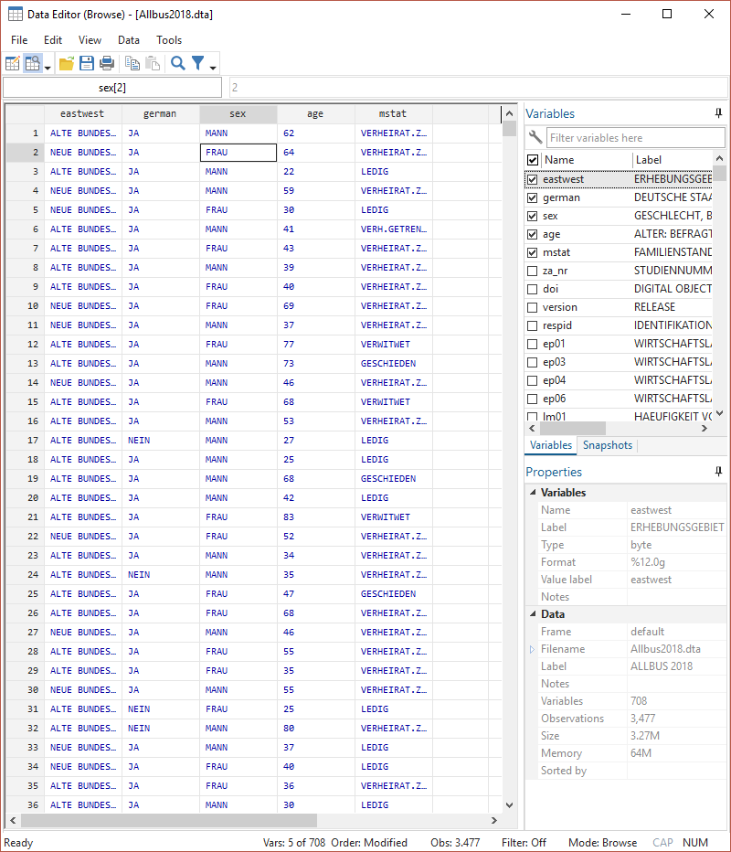
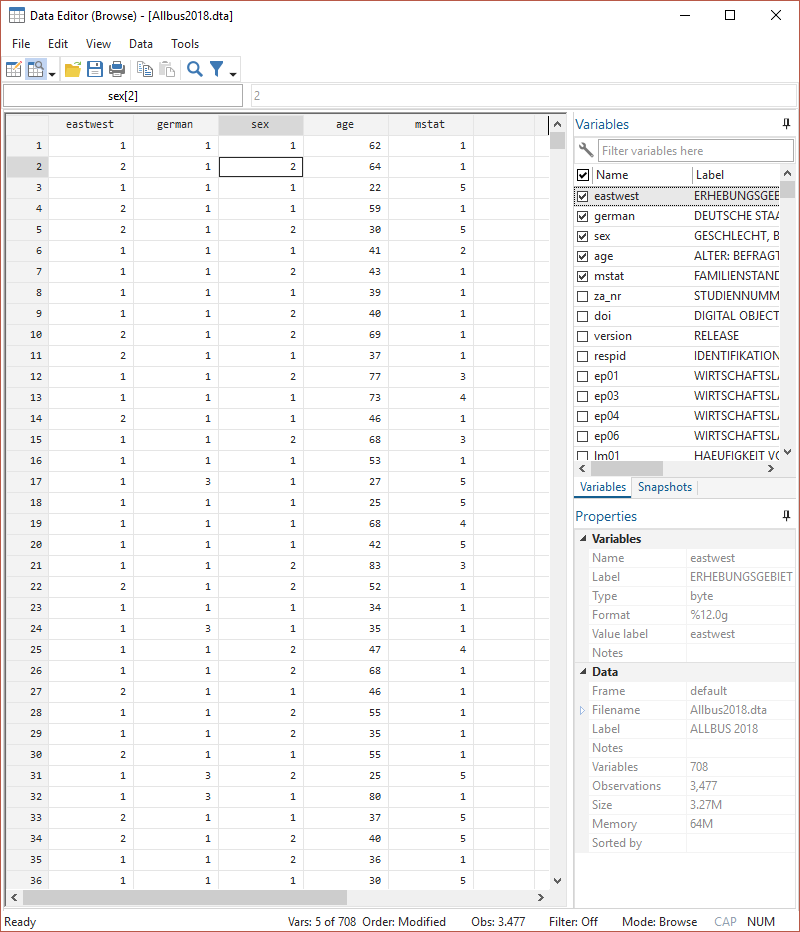

1 Einstieg in Stata
Hier sehen wir die Startansicht von Stata:
Figure 1.1: Startansicht Stata16
Die Standardansicht von Stata besteht aus mehreren Fenstern:
- Kommandos/Befehle
- Ergebnisse
- Variablenübersicht
- Übersicht zu den geladenen Daten
- Befehlshistorie
1.1 Taschenrechner
In das Befehlsfeld (1) können wir Kommandos eingeben, z.B. eine Berechnung durchführen. Dazu geben wir zunächst den Befehl display und dann die gewünschte Rechnung ein und drücken dann Enter. Der Befehl wird dann im Ergebnisfenster gespiegelt und darunter das Ergebnis ausgegeben:

Wir können display auch mit dis abkürzen.
1.2 Darstellung in diesem Skript
Eingaben und Ergebnisse werden im weiteren Skript so dargestellt:
1531.3 DoFile Editor
Zwar funktioniert die direkte Eingabe in das Befehlsfeld, allerdings werden wir im Laufe dieser Woche sehr viel längere und komplexere Befehle kennenlernen. Für solche Anwendungen werden in Stata sog. DoFiles angelegt. Darin können Befehle entworfen und für eine spätere Verwendung abgespeichert werden. Um ein DoFile zu öffnen geben wir entweder doedit in das Befehlsfeld ein oder klicken auf das Feld “New Do-file-Editor” rechts oben:
 Es öffnet sich ein neues Fenster:
Es öffnet sich ein neues Fenster:

In diesem sog. Do-File-Editor können wir Befehle entwerfen. Wenn wir diese dann durchführen möchten, markieren wir die entsprechenden Zeilen und drücken STRG + D. Die ausgeführten Befehle werden wieder im Ergebnisfenster gespiegelt und jeweils darunter die Ergebnisse angezeigt:

Das DoFile können wir speichern, um es später wieder aufzurufen. Wichtig ist dabei, der gespeicherten Datei die Endung “.do” zu geben, also zum Beispiel “01_Montag.do”. Diese DoFiles können dann einfach ausgetauscht werden, um später daran weiter zu arbeiten oder Analysen für Dritte nachvollziehbar zu machen.

1.4 Datensätze laden
Das ist aber alles soweit sehr unspektulär - es gibt schönere und günstigere Taschenrechner als Stata. Die eigentliche Stärke von Stata ist die Analyse von Datensätzen. Diese müssen zunächst eingelesen werden. Im einfachsten Fall liegen die Daten als Stata-Datensatz (mit der Endung .dta) vor und wir können die Daten wie folgt einlesen:
Der Einlesevorgang besteht also aus zwei Befehlen: zuerst geben wir cd den Pfad an, unter welchem der einzulesende Datensatz zu finden ist. Natürlich hängt der Dateipfad aber ganz davon ab, wo Sie den Datensatz gespeichert haben, hier ist es “C:/Users/Andreas/Dokumente/Statistik/”:
Um den Pfad des Ordners herauszufinden, klicken Sie bei Windows in die obere Adresszeile im Explorerfenster:

In iOS (Mac) finden Sie den Pfad indem Sie einmal mit der rechten Maustaste auf die Datei und unter Informationen den Reiter “Ort” wählen.
Wir haben zwei Möglichkeiten zu das aktuelle Arbeitsverzeichnis überprüfen: wir sehen das aktuelle Arbeitsverzeichnis im Stata-Fenster links unten oder wir geben pwd ein:

Wir können diese beiden Schritte natürlich auch einfach kombinieren und den gesamten Pfad nach use angeben:
Wenn das funktioniert hat, dann sehen wir im Fenster rechts eine Variablenübersicht:
In dieser Variablenübersicht können mit Hilfe des Suchfelds (oranger Kreis) auch nach Variablen suchen:

1.5 Daten, Codebücher, Fragebogen
Die Daten des hier geladenen Datensatzes enthalten die Angaben von 3477 Befragten des Allbus 2018. Die Allgemeine Bevölkerungsumfrage der Sozialwissenschaften (ALLBUS) ist ein Vorhaben von GESIS, das in Zusammenarbeit mit der Studien-Koordinationsgruppe ALLBUS (KG ALLBUS) als wissenschaftlichem Beratungsgremium realisiert wird (https://www.gesis.org/allbus/allbus). Die Daten werden dabei mit Hilfe von Interviews werden persönlich-mündlich durchgeführt. Im Jahr 2000 erfolgte der Umstieg von traditionellen Papierfragebögen (paper and pencil interviewing - PAPI) zur computerunterstützten Befragung mit Laptop (computer assisted interviewing CAPI).
Das heißt, die hier geladenen Daten beruhen auf standardisierten Interviews. Derartige Datensätze werden in der Regel zusammen mit einem Codebuch und dem Fragenkatalog veröffentlicht. Sie finden das Codebuch und den Fragenkatalog für den Allbus 2018 auf ILIAS - ebenso für alle weiteren Datensätze, die wir im Lauf dieser Woche verwenden werden. Im Fragenkatalog finden wir den exakten Wortlaut der Fragen:
Im Codebuch (“Variable Report”) finden wir eine Beschreibung der Variablen in unserem Datensatz:
Die Antworten der Befragten werden dann im Datensatz gesammelt. Dazu werden den Antworten in der Regel Zahlencodes zugewiesen (siehe die ganz linke Spalte im Codebuch) und so abgelegt. Stata erlaubt dann in einem zweiten Schritt, dass diese Zahlen wieder mit Wertelabeln versehen werden (siehe untere Darstellung) - dazu kommen wir später. In diesem Datensatz entspricht dann jede Zeile einer befragten Person: Sowohl im Codebuch als auch in der Fragebogendokumentation finden wir Kürzel links bzw. rechts oben, welche die Variablennamen für den Datensatz angeben.
1.6 Überblicksbefehle
Für eine erste Annäherung an die Daten helfen uns drei Überblicksbefehle: browse, describe und list. Zur Erinnerung: wir haben den Datensatz geladen:
1.6.1 describe
Mit describe, short bekommen wir einen Überblick zu den eingelesenen Daten:
Contains data from D:\oCloud\Home-Cloud\Lehre\Methodenseminar\Allbus2018.dta
obs: 3,477 ALLBUS 2018
vars: 708 28 Mar 2019 16:09
size: 3,431,799
Sorted by: Hier wurde also ein Datensatz geladen, welcher 3477 Fälle/Zeilen (obs) und 708 Variablen/Spalten (vars) enthält.
(Wir können den Befehl auch als d,s abkürzen)
Wir können den describe Befehl auch nutzen, um Informationen zu einer Variable zu erhalten. Dazu hängen wir einfach eine oder mehrere Variablen an describe an:
storage display value
variable name type format label variable label
--------------------------------------------------------------------------------
pv01 byte %12.0g pv01 BEFR.: WAHLABSICHT BUNDESTAGSWAHLHier sehen wir also in der ersten Spalte nochmal den vollständigen Variablennamen, den Variablentypen (storage type - mehr dazu hier) sowie - falls vorhanden - eine Beschreibung der Variable (variable label) sowie der Ausprägungen der Variable (value label)
Wir können auch alle Variablen aufrufen, die mit pa beginnen, indem wir einen * einsetzen:
storage display value
variable name type format label variable label
------------------------------------------------------------------------------------------
pv19 byte %12.0g pv19 WAHRSCHEINLICHKEIT: CDU-CSU WAEHLEN
pv20 byte %12.0g pv20 WAHRSCHEINLICHKEIT: SPD WAEHLEN
pv21 byte %12.0g pv21 WAHRSCHEINLICHKEIT: FDP WAEHLEN
pv22 byte %12.0g pv22 WAHRSCHEINL.: BUENDNIS 90-GRUENE WAEHLEN
pv23 byte %12.0g pv23 WAHRSCHEINLICHKEIT: DIE LINKE WAEHLEN
pv24 byte %12.0g pv24 WAHRSCHEINLICHKEIT: AFD WAEHLEN
pv01 byte %12.0g pv01 BEFR.: WAHLABSICHT BUNDESTAGSWAHL
pv03 byte %12.0g pv03 WAHLBETEILIGUNG, LETZTE BUNDESTAGSWAHL?
pv04 byte %12.0g pv04 ZWEITSTIMME, LETZTE BUNDESTAGSWAHL
pv06 byte %12.0g pv06 WARUM HAT BEFR. NICHT GEWAEHLT?1.6.2 browse
Mit browse bekommen wir eine Ansicht des Datensatzes:

Wenn wir nur einige Variablen betrachten möchten, hängen wir diese einfach browse an:

Hier bekommen aber immer die gelabelte Ansicht - allerdings stehen dahinter Zahlenwerte. Die Labels helfen uns, deren Bedeutung zu verstehen. Wenn wir aber wie in den nächsten Tagen auch mit den Daten arbeiten wollen, dann beziehen sich diese Operationen immer auf die dahinterstehenden Zahlenwerte. Diese bekommen wir mit der Option nolabel (oft auch einfach als nol abgekürzt):

1.6.3 list
browse eignet sich vor allem für größere Übersichten. Wenn wir nur einige wenige Fälle betrachten möchten, dann ist list eine gute Alternative, da der Output hier gleich im Ergebnisfenster (2) angezeigt wird. Die Funktionsweise von list ähnelt sich im Prinzip der von browse. Mit dem Zusatz in 1/10 können wir die ersten 10 Zeilen anzeigen lassen (ansonsten würden alle 3477 Fälle angezeigt!):
+--------------------------------------------+
| inc eastwest mstat |
|--------------------------------------------|
1. | 2200 ALTE BUNDESL VERHEIRAT.ZU |
2. | 1500 NEUE BUNDESL VERHEIRAT.ZU |
3. | 1400 ALTE BUNDESL LEDIG |
4. | 3600 NEUE BUNDESL VERHEIRAT.ZU |
5. | 1700 NEUE BUNDESL LEDIG |
|--------------------------------------------|
6. | 3450 ALTE BUNDESL VERH.GETRENN |
7. | 854 ALTE BUNDESL VERHEIRAT.ZU |
8. | 1500 ALTE BUNDESL VERHEIRAT.ZU |
9. | KEINE ANGABE ALTE BUNDESL VERHEIRAT.ZU |
10. | 978 NEUE BUNDESL VERHEIRAT.ZU |
+--------------------------------------------+1.6.4 lookfor
All diese Befehle setzen aber voraus, dass wir wissen, unter welchem Variablennamen die interessierende Information abgelegt wurde. Mit lookfor "stichwort" können wir den Datensatz nach einem Stichwort durchsuchen:
storage display value
variable name type format label variable label
--------------------------------------------------------------------------------------------------------------------------------------------------------------------------------------------------------
age byte %12.0g age ALTER: BEFRAGTE(R)
agec byte %12.0g agec ALTER: BEFRAGTE(R), KATEGORISIERT
dw12a byte %12.0g dw12a BEFR.: ALTER BEI AUFGABE DES BERUFS
scage byte %12.0g scage GEGENWAERTIGER EHEPARTNER: ALTER
scagec byte %12.0g scagec GEGENWAERTIGER EHEPARTNER: ALTER, KAT.
page byte %12.0g page LEBENSPARTNER: ALTER
pagec byte %12.0g pagec LEBENSPARTNER: ALTER, KAT.
hh2age byte %12.0g hh2age 2.HAUSH.PERSON: ALTER
hh3age byte %12.0g hh3age 3.HAUSH.PERSON: ALTER
hh4age byte %12.0g hh4age 4.HAUSH.PERSON: ALTER
hh5age byte %12.0g hh5age 5.HAUSH.PERSON: ALTER
hh6age byte %12.0g hh6age 6.HAUSH.PERSON: ALTER
hh7age byte %12.0g hh7age 7.HAUSH.PERSON: ALTER
hh8age byte %12.0g hh8age 8.HAUSH.PERSON: ALTER
kh1age byte %12.0g kh1age ALTER, 1.KIND, AUSSER HAUS
kh2age byte %12.0g kh2age ALTER, 2.KIND, AUSSER HAUS
kh3age byte %12.0g kh3age ALTER, 3.KIND, AUSSER HAUS
kh4age byte %12.0g kh4age ALTER, 4.KIND, AUSSER HAUS
kh5age byte %12.0g kh5age ALTER, 5.KIND, AUSSER HAUS
kh6age byte %12.0g kh6age ALTER, 6.KIND, AUSSER HAUS
kh7age byte %12.0g kh7age ALTER, 7.KIND, AUSSER HAUS
kh8age byte %12.0g kh8age ALTER, 8.KIND, AUSSER HAUS
I004 byte %12.0g I004 ZUSTAENDIGKEIT: PFLEGE ALTER MENSCHEN
ISSP_D_1 byte %12.0g ISSP_D_1 ISSP NICHT SELBST WEIL: ALTER
xi03 byte %12.0g ALTER, INTERVIEWER(IN)
xi03c byte %12.0g xi03c ALTER, INTERVIEWER(IN), KAT.1.7 löschen
Wenn wir einen Datensatz aus dem Speicher löschen wollen, dann können wir dies mit clear.
1.8 if Bedingung - nur manche Zeilen ansehen
Mit durch Anhängen einer if-Bedingung können wir nur bestimmte Zeilen anzeigen lassen. Zum Beispiel können wir uns mit Hilfe einer if-Bedingung nur die 20-jährigen Befragten anzeigen lassen:
…oder Befragte mit einem Einkommen unter 1000 Euro:
Wir können auch mehrere Bedingungen setzen. Sollen beide/alle zutreffen, verbinden wir die Bedingungen mit & - zB. wenn wir weibliche Befragte mit einem Einkommen unter 1000 Euro auswählen möchten:
Für “ist gleich” sind immer zwei == zu verwenden.
Mit | können wir hingegen Fälle auswählen, für welche die ein oder die andere Bedingung zutrifft:
Für if-Bedingungen stehen uns die üblichen Operatoren zur Verfügung:
>, <, ==, >=, <=, != (ungleich)
Mit inrange können wir Auswahlen bequem auf einen Wertebereich eingrenzen - d.h. diese beiden Auswahlen führen zum gleichen Ergebnis (nur Befragte, die zwischen 20 und 30 Jahre alt sind):
1.9 Übungen 1
Führen Sie folgende (oder beliebige andere) Taschenrechneraufgaben mit Stata durch:
- 2 * 4
- 2 / 8
- 2 ^ sqrt(4) + 5
Laden Sie die Datensätze und Codebücher aus ILIAS herunter und legen Sie alle Dateien in einem Ordner Ihrer Wahl!
Lesen Sie den Allbus 2018 in Stata ein.
- In welchem Arbeitsverzeichnis befinden Sie sich aktuell?
- In welchem Ordner haben Sie die Datensätze aus ILIAS abgelegt? Navigieren Sie Stata mit
cdin eben diesen Ordner, in dem die Datensätze abgelegt sind! - Nutzen Sie
describeundbrowse, um sich einen Überblick über den Datensatz zu verschaffen. - Wie viele Variablen und wie viele Fälle enthält der Datensatz?
- Unter welchem Variablennamen ist die Parteipräferenz der Befragten ablegt?
- Lassen Sie sich diese Variable im Datenexplorer mit
browseanzeigen. - Lassen Sie sich diese Variable mit den Zahlencodes anstatt der labels anzeigen.
- Welche Information ist in der Variable
respidabgelegt? - Wie können Sie sich die Zeile anzeigen lassen, welche den/die Befragte*n mit der
respid3469 enthält? - Wie alt ist der/die Befragte mit der
respid3469? Welches Geschlecht und welche Wahlabsicht hat die Person angegeben? Tipp: Das Alter ist inageablegt, die Wahlabsicht inpv01.
1.10 Profi-Übungen 1
Für alle, die noch etwas mehr machen möchten:
- Auf ILIAS finden Sie auch eine SPSS-Version (.sav-Datei) des Allbus 2018. Lesen Sie diese Dateiversion in Stata ein! (Siehe weitere Anmerkungen)
- Auf ILIAS finden Sie auch eine csv-Datei des Allbus 2018. Lesen Sie diese Dateiversion in Stata ein! (Siehe weitere Anmerkungen)
1.11 Anhang 1
1.11.1 Variablentypen
In Stata gibt es zwei Variablentypen:
Zahlenvariablentypen:
byte,int,long,float,double- der Unterschiede zwischen diesen Variablentypen besteht vor allem in der Spannbreite der möglichen Werte: währendbyteWerte zwischen -127 und 100 annehmen kann, können inlongzwischen -2,147,483,647 2,147,483,620 (Stata verwaltet diese Typen in der Regel automatisch - für weitere Hinweisehelp data_types)Textvariablen, sog. strings
strXX- wobeiXXdie Zahl der (maximal) verwendeten Zeichen angibt
Hier einige Beispiele aus dem Allbus 2018:
storage display value
variable name type format label variable label
--------------------------------------------------------------------------------
pv01 byte %12.0g pv01 BEFR.: WAHLABSICHT BUNDESTAGSWAHL
version str18 %18s RELEASE
wghtpew double %12.0g PERSONENBEZOGENES OST-WEST-GEWICHT
xs11 int %12.0g (VIRTUELLE) POINT NUMMER
age byte %12.0g age ALTER: BEFRAGTE(R)
sex byte %12.0g sex GESCHLECHT, BEFRAGTE(R)1.11.2 import anderer Dateiformate
Häufig liegen Datensätze nicht im .dta-Format vor, sondern beispielsweise als Excel-Tabelle (.xslx oder .xls), SPSS-Datei (.sav) oder als .csv-Datei.
Hierfür stehen alternative Importbefehle zur Verfügung:
import excelfür Excel Tabellenimport spssfür SPSS-Dateienimport delimitedfür csv-Dateien
Hier empfiehlt sich ein Blick in das Auswahlmenü unter File > Import:
 Nach Klick auf das entsprechende Dateiformat öffnet sich ein Dialogfenster, in das die gewünschten Optionen eingetragen werden können. Sind alle Optionen wie gewünscht gesetzt, gibt es unten gibt es die Möglichkeit, den so zusammengestellten Befehl nicht nur durchzuführen, sondern auch zu kopieren (um ihn beispielsweise in ein DoFile einzufügen):
Nach Klick auf das entsprechende Dateiformat öffnet sich ein Dialogfenster, in das die gewünschten Optionen eingetragen werden können. Sind alle Optionen wie gewünscht gesetzt, gibt es unten gibt es die Möglichkeit, den so zusammengestellten Befehl nicht nur durchzuführen, sondern auch zu kopieren (um ihn beispielsweise in ein DoFile einzufügen):

Eine zentrale Frage ist u.a., ob die erste Zeile des Datensatzes als Variablennamen übernommen werden soll oder in der ersten Zeile bereits Daten enthalten sind. In diesem Fall vergibt Stata dann Variablennamen (v1-vXX). Dies wird mit der Option varnames angegeben: bei varnames(1) wird die erste Zeile als Spaltenname verwendet, varnames(nonames) hingegen verwendet alle Zeilen aus dem Datensatz als Fälle und vergibt selbst Variablennamen. So sieht bspw. ein csv-Import aus:
import delimited "eigene_Datei.csv", varnames(1) clear